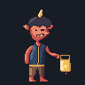
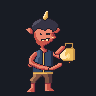
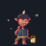
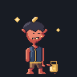
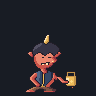
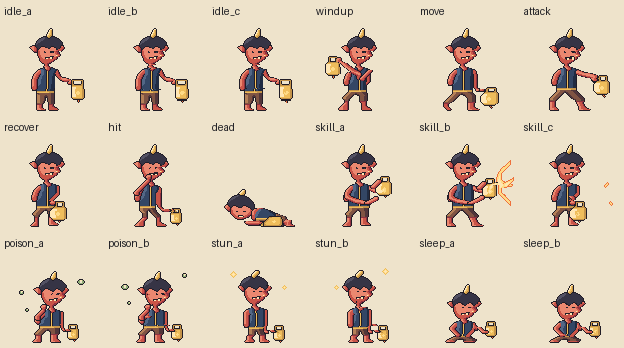
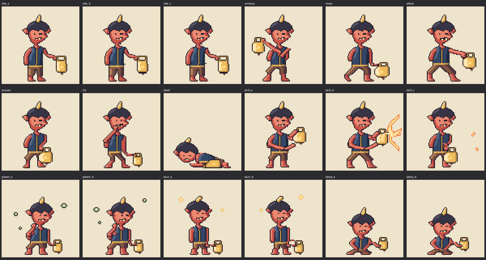
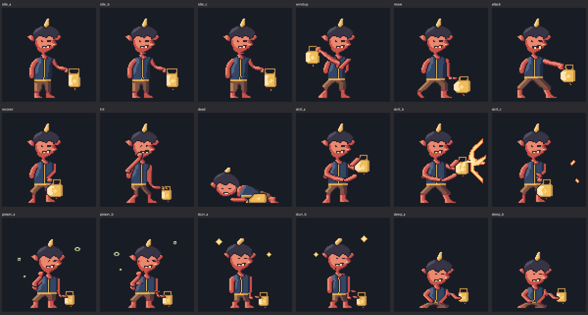
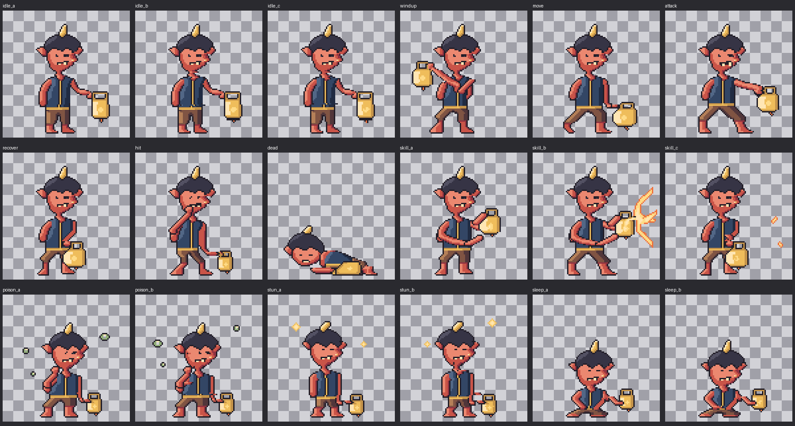

초롱도깨비 · 18 native 자세 / 8동작
96×96 원본. 사람 승인 및 독립 검수 결과를 포함하지 않는 저작 후보입니다.
idle

GIF 원본 · 저장 프레임 확인판
attack
GIF 원본 · 저장 프레임 확인판
hit
GIF 원본 · 저장 프레임 확인판
dead
GIF 원본 · 저장 프레임 확인판
skill

GIF 원본 · 저장 프레임 확인판
poison

GIF 원본 · 저장 프레임 확인판
stun

GIF 원본 · 저장 프레임 확인판
sleep

GIF 원본 · 저장 프레임 확인판
원본 1배

light · 3배

dark · 3배

checker · 3배

저작 기록 · 시간표